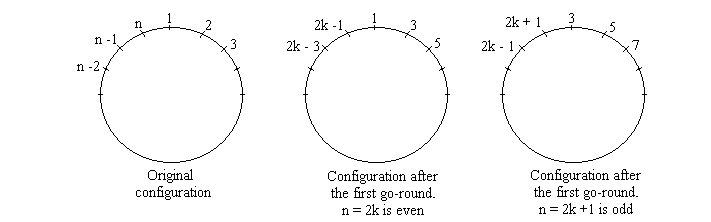

Josephus problem
Preface
This is actually MAW 3.10. I gradually realize how dense MAW is. In the previous problem, I write almost 500 lines of code. For this one, the problem is not really diffcult to solve if we implement a program that follows the game rule exactly. However, I figure it is a good chance to dig a little deeper to learn somewhat fully from the question.
Let's start to dive in.
Overview
I first describe the Josephus problem in general. Then, I present a closed form solution to solve a special case of the original problem. Afterwards, I present a recurrence solution to solve the general problem.
Josephus problem
The Josephus problem is the following game: \(N\) people, numbered \(1\) to \(N\), are sitting in a circle. Starting at person 1, a hot potato is passed. the \(M\)th person holding the hot potato is eliminated, the circle closes ranks, and the game continues with the person who was sitting after the eliminated person picking up the hot potato. The last remaining person wins. Thus, if \(M = 1\) and \(N = 5\), players are eliminated in order, and player 5 wins. If \(M = 2\) and \(N = 5\), the order of elimination is \(2\),\(4\),\(1\),\(5\).
You can play with different \(M\), \(N\) on this site to get a better sense of the problem.
Note
MAW uses a problem description that is slight different than the problem description usually find online. In the book, he defines \(M\) in term of number of passes. However, in our problem description, we use \(M\) to indicate the \(M\)th person get eliminated. Here is an example to show the difference.In MAW description, \(M = 0\) and \(N = 5\), players are eliminated in order. However, in our own intepretation, \(M\) should be \(1\) in order to achieve the same elimination order. Similarly, in the book, \(M = 1\) when we have \(2\), \(4\), \(1\), \(5\) elimination order for the second example. Mathematically, \(M_{new} = M_{MAW} + 1\).
Josephus problem with \(M = 2\)
Let's first discuss a special case of the Josephus Problem: \(M = 2\).
In the following, \(n\) denotes the number of people in the initial circle, and \(m\) denotes the count for each step. In other words, \(m-1\) people are skipped and the \(m\)-th is eliminated. The people in the circle are numbered from \(1\) to \(n\). Our goal is to find \(J(n,m)\), which denotes the survivor's number (i.e. \(J(5,1) = 3\)). For simplicity, let \(F(n) = J(n,2)\).

One quick observation is that after the first go-round, we are left with the same problem but for a different number of people. For instance, when \(n = 10\), after the first go-round, we eliminate \(2\), \(4\), \(6\), \(8\), \(10\) and then we go to the second-round beginning with \(3\), which is the same problem as the original one. The only difference is that the person with number \(3\) in the first-round now becomes number \(2\) in the second-round.
Case 1: When \(n\) is even ...
Let \(n = 2k\). After the first-round we are left with \(k\) people, and we try to find out what is \(F(k)\). In addition, by our observation, the numbering of people is changed. If \(3\) is actually the answer (i.e. \(F(2k) = 3\)), then in the second-round the original person with \(3\) now becomes \(2\) (i.e. \(F(k) = 2\)). So, we have
Case 2: When \(n\) is odd ...
Let \(n = 2k+1\). By the same reasoning as case 1, after the first-round, we still eliminate \(k\) people. For instance, when \(n = 9\), after the first-round, we elminate \(2\), \(4\), \(6\), \(8\), \(1\). In other words, \(1\) is eliminate just after person number \(2k\). So, we have
So now our goal is to solve the recurrence equations \ref{eq:1} and \ref{eq:2} given \(F(1) = 1\) to find a closed form. Let's do this by building a table of small values:
| n | 1 | 2 3 | 4 5 6 7 | 8 9 10 11 12 13 14 15 | 16 |
|------|---|-------|---------------|-------------------------------------|----|
| F(n) | 1 | 1 3 | 1 3 5 7 | 1 3 5 7 9 11 13 15 | 1 |
We can group the columns by powers of \(2\) (marked by vertical lines in the table); Inside each group, \(F(n)\) is always \(1\) at the beginning and then it increases by \(2\) until the next group, which is the next power of \(2\). So, for every number \(n\), there exists an integer \(a\) such that \(2^a <= n < 2^{a+1}\). For some \(0 <= l <= 2^a\), then \(n = 2^a + l\). In other words, \(2^a\) is the largest power of 2 not exceeding \(n\) and \(l\) is what's left. Then, from the table above, we may have the formula:
Now, let's prove equation \ref{eq:3} by induction on \(a\).
- Base case. When \(a = 0\), we must have \(l = 1\); thus we have \(F(1) = 1\), which is true.
-
Induction. We use strong induction by assuming that the equation holds for all \(a\) up to certain value. Let's consider this value of \(a\). The induction steps has two parts, depending on whether \(n\) (and thus \(l\)) is even or odd.
-
If \(2^a + l = 2k\), then
$$ \begin{align*} F(2^a + l) &= 2F(2^{a-1} + l/2) - 1 &&\text{(by equation 1)} \\ &= 2(2l/2 + 1) - 1 &&\text{(by induction hypothesis)} \\ &= 2l + 1 \end{align*} $$ -
If \(2^a + l = 2k+1\), then
$$ \begin{align*} F(2^a + l) &= 2F(2^{a-1} + (l-1)/2) + 1 &&\text{(by equation 2)} \\ &= 2(2(l-1)/2 + 1) + 1 &&\text{(by induction hypothesis)} \\ &= 2l + 1 \end{align*} $$
-
This completes induction step.
Let's revisit our closed form solution \ref{eq:3} again. Let's rewrite it into the form:
\(n - 2^a\) is the same as zeroing the most significant bit of \(n\). Then, we multiply the result with \(2\), which is the same as shifting left one place, and adding \(1\) is the same as setting the lowest bit to \(1\). In other words, equation \ref{eq:3} is essentially do a one-bit cyclic shift left. Let's try to write this out formally. Let \(n = (b_ab_{a-1}..b_1b_0)_2\), then we have:
For a more rigorous derivation of this cyclic shift property, please reference Concrete Mathematics: A Foundation for Computer Science.
The way we solve Josephus problem with \(M = 2\) is unlikely to be generalized for arbitrary \(m\). Let's take \(n = 10\), \(m = 2\) example again. The reason we can derive the nice recurrence equations \ref{eq:1} and \ref{eq:2} is because our observation. Let's present our observation is a different way. \(F(2k)\) denotes the old numbering before the first-round. \(F(k)\) denotes the new numbering after the first-round.
m = 2 m = 3
+-------+------+ +-------+------+
| F(2k) | F(k) | | F(2k) | F(k) |
+-------+------+ +-------+------+
| 1 | 1 | | 1 | 1 |
+-------+------+ +-------+------+
| 3 | 2 | | 2 | 2 |
+-------+------+ +-------+------+
| 5 | 3 | | 4 | 3 |
+-------+------+ +-------+------+
| 7 | 4 | | 5 | 4 |
+-------+------+ +-------+------+
| 9 | 5 | | 7 | 5 |
+-------+------+ +-------+------+
| 8 | 6 |
+-------+------+
| 10 | 7 |
+-------+------+
By looking at the table on the left, we can easily see that \(F(2k) = 2F(k) - 1\). However, there is no nice clean linear relation that we can get between \(F(2k)\) and \(F(k)\) when \(n = 10\), \(m = 3\).
Note
Inside Concrete Mathematics: A Foundation for Computer Science, after talking about the solution to the Josephus problem, the author shift their focus to solve a generalized recurrence of \ref{eq:1} and \ref{eq:2}, which is (1.11) in the book. This has nothing to do with the Josephus problem and I'm guessing the reason why the author want to talk about the solution to the generalized recurrence is to illustrate dynamic programming philosophy.
General solution
The big picture here is we need to find out the relative position of the final survivor to the "first" person during each recursive call and then calculate the actual position for actual \(n\)
The general solution utilitizes the dynamic programming paradigm by performing the first step and using the solution of the subproblem we create to solve the initial problem. In terms of the solution, there is a difference when we start with the first person as \(1\) or \(0\).
Starting from 1
The key insight is the following: the result of \(J(n,m)\) is best NOT thought of as the number that is the Josephus survivor, but rather as the index of the number that is the Josephus survivor.
Let's first take a look an example when \(n = 6\) and \(m = 2\).
fig.1
1 2 1 X 1 X 1 X 1 X X X
6 3 -> 6 3 -> 6 3 -> X 3 -> X X -> X X
5 4 5 4 5 X 5 X 5 X 5 X
fig.2
| index | 1 | 2 | 3 | 4 | 5 | 6 |
|-------|---|---|---|---|---|---|
| n = 6 | 1 | 2 | 3 | 4 | 5 | 6 | J(6,2) = 5
| n = 5 | 3 | 4 | 5 | 6 | 1 | 3 | J(5,2) = 3
| n = 4 | 5 | 6 | 1 | 3 | 5 | 6 | J(4,2) = 1
| n = 3 | 1 | 3 | 5 | 1 | 3 | 5 | J(3,2) = 3
| n = 2 | 5 | 1 | 5 | 1 | 5 | 1 | J(2,2) = 1
| n = 1 | 5 | 5 | 5 | 5 | 5 | 5 | J(1,2) = 1
fig.3
| index | 1 | 2 | 3 | 4 | 5 | 6 |
|-------|---|---|---|---|---|---|
| n = 6 | 1 | X | 3 | 4 | 5 | 6 | J(6,2) = 5 = (2-1 + 3) mod 6 + 1
| n = 5 | 3 | X | 5 | 6 | 1 | 3 | J(5,2) = 3 = (2-1 + 1) mod 5 + 1
| n = 4 | 5 | X | 1 | 3 | 5 | X | J(4,2) = 1 = (2-1 + 3) mod 4 + 1
| n = 3 | 1 | X | 5 | 1 | X | 5 | J(3,2) = 3 = (2-1 + 1) mod 3 + 1
| n = 2 | 5 | X | 5 | X | 5 | X | J(2,2) = 1 = (2-1 + 1) mod 2 + 1
| n = 1 | 5 | 5 | 5 | 5 | 5 | 5 | J(1,2) = 1
By looking at fig.1, we know that \(J(6,2) = 5\). Now, if we take a look at fig.2, the row with \(n = 5% shows that $J(5,2) = 3\). By the insight, \(3\) here means the index not the number. So, our final survivor is \(5\), which is positioned on \(3\) in this row.
Let's generalize the example a little bit. Suppose we want to know \(J(n,2)\). You can imagine we have \(n\) people lined up like this:
1 2 3 4 5 ... n
The first thing that happens is that person \(2\) get eliminated, as shown here:
1 X 3 4 5 ... n
Now, we are left with a subproblem of the following form: there are \(n - 1\) people remaining, every other person is going to be eliminated, and the first person who will start to pass potato is person \(3\). In other words, the subproblem \(J(n-1, 2)\) now looks like:
3 4 5 ... n 1
\(J(n-1, 2)\) will be the index of who survives in a line of \(n - 1\) of people. Given that we have the index of the person who will survive, and we also know who the starting person is, we can determine which person will be left. Here's how we'll do it.
The starting person in this line is the person who comes right after the person who was last executed. This will be person \(3\). The 1-indexed position in the ring of \(n-1\) people is given by \(J(n-1, 2)\). We can then walk forward \(J(n-1, 2)\) positions, wrapping around the ring if necessary, to get our final position. In other words, the survivor is given by position
Let's take a look at \(n = 5\) in fig.2 again. Now, the starting position is \(3\) and we walk forward by \(J(5,2) - 1\) steps (i.e. \(2\) steps) and we get the final survivor, which is \(5\). The reason we doing \(\bmod n\) is because we want to keep final survivor within the bounds of the circle.
However, there is a problem with our equation \ref{eq:4}. If we are indeed using one-indexing, what happens if the final survivor is at position \(n\)? In that case, we would accidentally get back position \(0\) as our answer, but we really want position \(n\). For example, suppose \(J(5,2) = 4\). In other words, the final survivor is \(6\), which is positioned at \(4\) when \(n = 5\). Then, to apply equation \ref{eq:4}, we get \(0\), which is not \(6\).
To fix this issue, we'll use a trick for using mod to wrap around with one-indexing: we'll take the inside quantity (the one-indexed position) and subtract one to get the zero-indexed position. We'll mod that quantity by \(n\) to get the zero-indexed position wrapped around. Finally, we'll add back one to get the one-indexed position, wrapped around. That looks like:
In other words, \(-2\) term comes from two independent \(-1\)'s: the first \(-1\) is because \(J(n-1, 2)\) returns a one-indexed index, so to step forward by the right number of positions we have to take \(J(n-1,2) - 1\) steps forward. The second \(-1\) comes from the fact that we're using one-indexing rather than zero-indexing.
Now, we're finally ready to generalize the solution to arbitrary \(m\), not just \(m = 2\). After person \(m\) get eliminated, we have an array like this:
1 2 3 ... m-1 X m+1 ... n
We now essentailly need to solve a subproblem where person \(m+1\) comes first:
m+1 m+2 ... n 1 2 ... m-1
So we compute \(J(n-1, m)\) to get the one-indexed survivor of a ring of \(n-1\) people, then shift forward by that many steps:
We need to worry about the case where we wrap around, so we need to mod by \(n\):
However, we're one-indexed, so we need to use the trick of subtracing \(1\) from the inside quantity and then adding \(1\) at the end:
which simplifies to:
Notice that \(J(1,m) = 1\), which indicates that we're one-indexed.
Starting from 0
Since we are not in zero-indexed. Our \(J(6,2)\) example looks like the following:
| index | 0 | 1 | 2 | 3 | 4 | 5 |
|-------|---|---|---|---|---|---|
| n = 6 | 1 | 2 | 3 | 4 | 5 | 6 | J(6,2) = 4 = (2 + 2 ) mod 6
| n = 5 | 3 | 4 | 5 | 6 | 1 | 3 | J(5,2) = 2 = (0 + 2 ) mod 5
| n = 4 | 5 | 6 | 1 | 3 | 5 | 6 | J(4,2) = 0 = (2 + 2 ) mod 4
| n = 3 | 1 | 3 | 5 | 1 | 3 | 5 | J(3,2) = 2 = (0 + 2 ) mod 3
| n = 2 | 5 | 1 | 5 | 1 | 5 | 1 | J(2,2) = 0 = (0 + 2 ) mod 2
| n = 1 | 5 | 5 | 5 | 5 | 5 | 5 | J(1,2) = 0
Let's apply the same logic from the one-indexed case. After person \(m-1\) get eliminated, we have an array like this:
0 1 2 ... m-2 X m ... n-1
We now essentailly need to solve a subproblem where person \(m\) comes first:
m m+1 ... n-1 0 1 2 ... m-2
So, we compute \(J(n-1,m)\) to give us the zero-indexed survivor of a ring of \(n-1\) people and we shfit forward by that many steps:
We take care of wrapping around by mod \(n\):
Since we are zero-indexed, we are done. If we want to transform our answer to one-indexed, we can do:
Note that \(J(1,m) = 0\) in this case, which indicates that we're zero-indexed.
What's left out
- Equivalence Class Solution is interesting to check out.
- Rank tree as a data sturcture is worth to check out to solve this problem. This paper gives a more detailed analysis.